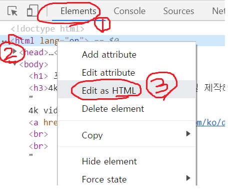

1) 유튜브 채널에서 어떤 채널의 동영상 목록에서 계속 스크롤을 내려서 모든 영상이 나오게 한 다음에, (키보드에 500원짜리 누르면 편함)
2) 크롬 콘솔창 (윈도우의 경우 F12) 을 열어주시고 Elements 에 나오는 html 내용들을 긁어주셔서 하단의 html 붙일 곳에 넣어주신뒤
(예시)

3) 윈도우 저장될 폴더 경로를 적어주시고, 변환 버튼을 눌러주세요!
4) csv 파일 다운로드를 원하시면, [결과 저장]을 눌러주시면 csv 파일로 다운로드가 됩니다
5) 4k video downloader 에서 [ 파일 - 다운로드 링크 가져오기 ] 를 하시고 해당 csv 파일을 import 해주시면 긁어간 모든 영상이 다운로드 시작 됩니다.
* 제 개인적으로 사용하려는 것을 몇몇 지인들과 나누고자함이니 어디 게시판 같은곳에 써주진 말아주세요